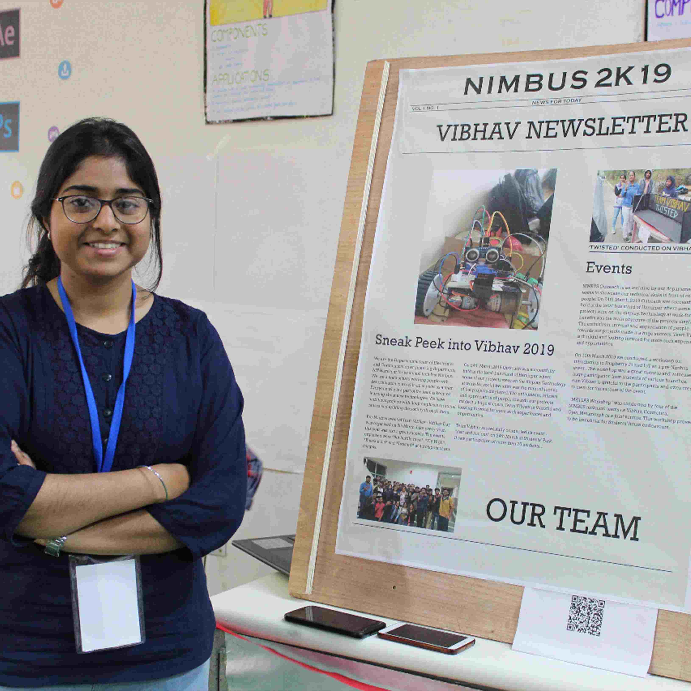

AR Newsletter Team Vibhav

AR news letter is a news letter that takes readers beyond the printed page.The main aim of ar news
letter is to attract new audiences especially young people to increase their waning number of readers
with an interactive environment